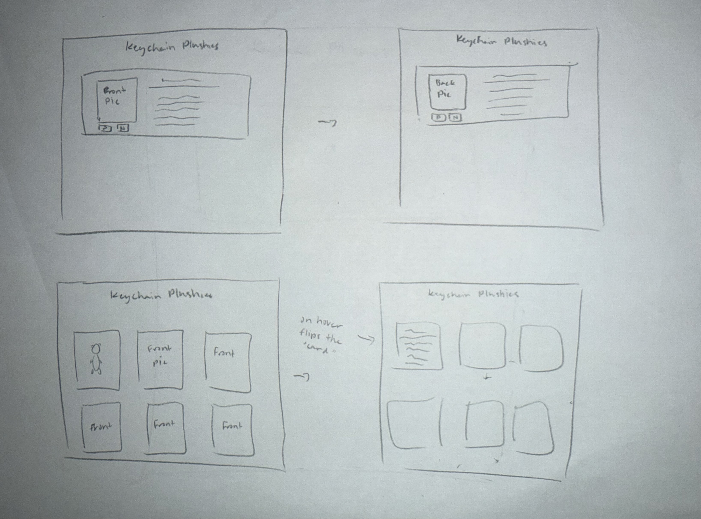

Ideas
For my every picture project, I am thinking about adding a next and previous button so that the image of the plushies can flip showing their front and back. I am also thinking about another idea from my peer review to make the image of the plushies flip to review its description about them. I will change the descriptions to tell/ connect a story of the plushies and I to make it interesting.